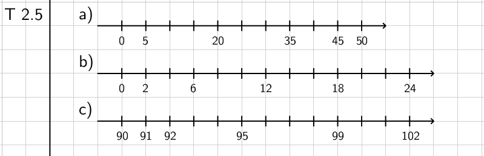

MA7 Jakso 1: Malliratkaisut
1. Lukujärjestelmä
Tehtävä 1.1: Johdatus kymmenjärjestelmään
Kysymys 1 (Vedä kohde kuvan päälle)

Kysymys 2 (Aukkotehtävä, NM)
a) 547
b) 1 205
c) 200 090
d) 1 053 007
Kysymys 3 (Aukkotehtävä, SA)
neljäkymmentäkolmetuhattaviisikymmentäviisi
neljäkymmentäkolmetuhatta viisikymmentäviisi
Tehtävä 1.2: Numeron paikka luvussa
Sähköinen tehtävä
Tehtävä 1.3: Luku numeroina
Sähköinen tehtävä
Tehtävä 1.4: Suuruusluokan arviointi
Kysymys 1 (Aukkotehtävä, MCS)
a) yksittäisille
b) tuhansia
c) kymmeniä
d) kymmeniä
e) satoja
f) kymmeniä
Kysymys 2 (Vedä sanat tekstiin)
a) 3 050 kg
b) 3 500 g
c) 55 000 kg
d) 425 kg
e) 1500 kg
f) 180 g
Tehtävä 1.5: Luvun kirjoittaminen
Kysymys 1 (Aukkotehtävä, NM)
a) 408
b) 5 240
c) 70 012
d) 302 695
Kysymys 2 (Aukkotehtävä, NM)
a) 5 015
b) 6 214
c) 32 517 000
d) 2 202 022
Kysymys 3 (Aukkotehtävä, SA)
a) neljäsataaneljäkymmentäviisi
b) kuusituhattakahdeksantoista TAI kuusituhatta kahdeksantoista
c) yhdeksänkymmentäyhdeksäntuhattaneljä TAI yhdeksänkymmentäyhdeksäntuhatta neljä
d) neljämiljoonaakaksisataaviisikymmentätuhatta TAI neljämiljoonaa kaksisataaviisikymmentätuhatta
Tehtävä 1.6: Suuruusluokan arviointi
Kysymys 1 (Aukkotehtävä, MCS)
a) yksittäisiä
b) kymmeniä tuhansia
c) satoja
d) satoja tuhansia
e) satoja
f) kymmeniä
Kysymys 2 (Vedä sanat tekstiin)
a) 8 848 m
b) 164 cm
c) 42 195 m
d) 11 km
e) 400 m
f) 161 km
2. Lukusuora
Tehtävä 2.1: Johdatus lukusuoraan
Kysymys 1 (Vedä kohde kuvan päälle)
Tehtävä 2.2: Lue luku lukusuoralta
Sähköinen tehtävä
Tehtävä 2.3: Lisää luku lukusuoralle
Sähköinen tehtävä
Tehtävä 2.4: Lisää luku lukusuoralle
Sähköinen tehtävä
Tehtävä 2.5: Lukusuoran piirtäminen
Piirrä lukusuora vihkoon, merkitse jako, ja lisää seuraavat luvut. Piirrä jokasielle kohdalle (a-c) oma lukusuora.
a) 5, 20, 35, 45 ja 50
b) 2, 6, 12, 18 ja 24
c) 90, 92, 95, 99 ja 102

3. Peruslaskutoimitukset
Tehtävä 3.1: Johdatus peruslaskutoimituksiin
Kysymys 1 (Yhdistämistehtävä)
Erotus
Osamäärä
Tulo
Summa
Kysymys 2 (Aukkotehtävä, SA)
a) 4+4+4 TAI 3+3+3+3
b) 5+5 TAI 2+2+2+2+2
c) 5*6 TAI 6*5
d) 3*7 TAI 7*3
e) 6*3 TAI 3*6
f) 7*5 TAI 5*7
g) 40/8
h) 63/9
Tehtävä 3.2: Yhteenlasku
Sähköinen tehtävä
Tehtävä 3.3: Vähennyslasku
Sähköinen tehtävä
Tehtävä 3.4: Kertolasku
Sähköinen tehtävä
Tehtävä 3.5: Jakolasku
Sähköinen tehtävä
Tehtävä 3.6: Sanallisia tehtäviä
a) Pekka ostaa kaupasta pussillisen leipää (3 €/pussi), litran maitoa (1 €/litra) sekä juuston (5 €/kpl). Kuinka paljon ostokset maksavat yhteensä?
\(\mathsf{3 \euro + 1 \euro + 5 \euro = 9 \euro}\)
Vastaus: Ostokset maksavat yhteensä 9 euroa.
b) Pekka maksaa a-kohdan ostokset 20 euron setelillä. Kuinka paljon Pekka saa rahaa takaisin?
\(\mathsf{20 \euro - 9 \euro = 11 \euro}\)
Vastaus: Rahaa saa takaisin 11 euroa.
c) Pauliina ostaa 6 jäätelöä (2 €/kpl). Kuinka paljon jäätelöt maksavat yhteensä?
\(\mathsf{6 \cdot 2 \euro = 12 \euro}\)
Vastaus: Jäätelöt maksavat yhteensä 12 euroa.
d) Kisastudion ruokaostokset maksavat 56 euroa. Kustannukset jaetaan seitsemän kaverin kesken tasan. Kuinka paljon kukin maksaa?
\(\mathsf{56 \euro : 7 = 8 \euro}\)
Vastaus: Kukin maksaa 8 euroa.
Tehtävä 3.7: Merkitse ja laske
Sähköinen tehtävä
Tehtävä 3.8: Merkitse ja laske
Sähköinen tehtävä
Tehtävä 3.9: Merkitse ja laske
Merkitse ja laske lukujen 15 ja 3
a) summa
\(\mathsf{15 + 3 = 18}\)
b) erotus
\(\mathsf{15 - 3 = 12}\)
c) tulo
\(\mathsf{15 \cdot 3 = 45}\)
d) osamäärä
\(\mathsf{15 : 3 = 5}\)
Tehtävä 3.10: Laske osittain jakamalla
Laske osittain jakamalla.
a) \(\mathsf{\dfrac{72}{3} = \dfrac{60}{3} + \dfrac{12}{3} = 20 + 4 = 24}\)
b) \(\mathsf{\dfrac{126}{3} = \dfrac{120}{3} + \dfrac{6}{3} = 40 + 2 = 42}\)
c) \(\mathsf{\dfrac{615}{5} = \dfrac{500}{5} + \dfrac{100}{5} + \dfrac{15}{5} = 100 + 20 + 3 = 123}\)
d) \(\mathsf{\dfrac{1519}{7} = \dfrac{1400}{7} + \dfrac{70}{7} + \dfrac{49}{7} = 200 + 10 + 7 = 217}\)
Jaon voi ensimmäisessä vaiheessa suorittaa monella eri tavalla.
Tehtävä 3.11: Summapyramidi
Sähköinen tehtävä
Tehtävä 3.12: Laske allekkain (summa ja erotus)
Laske allekkain.
a) \(\mathsf{2003 + 198}\)
b) \(\mathsf{764 + 248}\)
c) \(\mathsf{854 - 472}\)
d) \(\mathsf{704 - 248}\)
Tehtävä 3.13: Laske allekkain (tulo ja osamäärä)
Laske allekkain.
a) \(\mathsf{37 \cdot 4}\)
b) \(\mathsf{629 \cdot 25}\)
c) \(\mathsf{965:5}\)
d) \(\mathsf{8406:9}\)
4. Laskujärjestys
Tehtävä 4.1: Johdatus laskujärjestykseen
Kysymys 1 (Ordering)
- Sulkeet
- Tulo ja osamäärä
- Summa ja erotus
Kysymys 2 (Aukkotehtävät, MCV)
a) oikein
b) väärin
c) oikein
d) oikein
e) väärin
Tehtävä 4.2: Laskujärjestys
Sähköinen tehtävä
Tehtävä 4.3: Laskujärjestys
Sähköinen tehtävä
Tehtävä 4.4: Sanallisia tehtäviä
a) Ulla ostaa rautakaupasta vasaran (30 €), kolme ruuvimeisseliä (8 €/kpl) sekä seitsemän rullaa teippiä (2 €/rulla). Kuinka paljon ostokset maksavat yhteensä?
\(\mathsf{30 \euro + 3 \cdot 8 \euro + 7 \cdot 2 \euro = 68 \euro}\)
Vastaus: Ostokset maksavat yhteensä 68 euroa.
b) Tauno saa kokeista arvosanat 6, 10 ja 5. Mikä on kokeiden keskiarvo?
\(\mathsf{\dfrac{6 + 10 + 5}{3} = \dfrac{21}{3} = 7}\)
Vastaus: Kokeiden keskiarvo on 7.
Tehtävä 4.5: Päässälaskuja
Kysymys 1 (Aukkotehtävä, NM)
a) 65
b) 14
c) 36
d) 155
Tehtävä 4.6: Murtolausekkeita
Laske.
a) \(\mathsf{\dfrac{8+16}{3} = \dfrac{24}{3} = 8}\)
b) \(\mathsf{\dfrac{8 \cdot 5}{13-9} = \dfrac{40}{4} = 10}\)
c) \(\mathsf{\dfrac{55}{5 + 2 \cdot 3} = \dfrac{55}{11} = 5}\)
d) \(\mathsf{\dfrac{9 \cdot (14-6)}{34 - 4 \cdot 8} = \dfrac{9 \cdot 8}{34-32} = \dfrac{72}{2} = 36}\)
Tehtävä 4.7: Laske laskimella
Laske laskimella.
a) \(\mathsf{17+25 \cdot 48 = 1217}\)
b) \(\mathsf{(17+25) \cdot 48 = 2016}\)
c) \(\mathsf{\dfrac{348 + 774}{6} = 187}\)
d) \(\mathsf{\dfrac{66{,}78}{2{,}1 \cdot 10{,}6} = 3}\)
e) \(\mathsf{\dfrac{345 + 987}{2{,}5 \cdot 3{,}6} = 148}\)
f) \(\mathsf{12 \cdot 24 - 11 \cdot 19 = 79}\)
5. Suuruusvertailu
Tehtävä 5.1: Johdatus suuruusvertailumerkkeihin
Kysymys 1 (Vedä kohde kuvan päälle)
Kysymys 2 (Aukkotehtävä, MCV)
a) tosi
b) epätosi
c) epätosi
d) tosi
e) tosi
Tehtävä 5.2: Mikä luku sopii x:n paikalle?
Luettele kaikki kokonaisluvut, jotka sopivat \(\mathsf{x}\):n paikalle.
a) \( \mathsf{4 < x < 7} \)
5, 6
b) \( \mathsf{5 \leq x \leq 8} \)
5, 6, 7, 8
c) \( \mathsf{2 < x ≤ 4} \)
3, 4
d) \( \mathsf{0 \leq x < 3} \)
0, 1, 2
Tehtävä 5.3: Mikä luku sopii x:n paikalle? (Kokonaislukuväli)
Luettele kaikki kokonaisluvut, jotka sopivat \(\mathsf{x}\):n paikalle.
a) \( \mathsf{5 < x < 7} \)
6
b) \( \mathsf{5 \leq x \leq 7} \)
5, 6, 7
c) \( \mathsf{-2 < x < 3} \)
-1, 0, 1, 2
d) \( \mathsf{-5 \leq x < 0} \)
-5, -4, -3, -2, -1
e) \( \mathsf{-11 < x \leq -6} \)
-10, -9, -8, -7, -6
f) \( \mathsf{-1 \leq x \leq 2} \)
-1, 0, 1, 2
Tehtävä 5.4: Mikä luku sopii x:n paikalle? (Desimaalilukuväli)
Luettele kaikki kaksidesimaaliset luvut, jotka sopivat \(\mathsf{x}\):n paikalle.
a) \( \textsf{3,48} < \mathsf{x} < \textsf{3,52} \)
3,49; 3,50; 3,51
b) \( \textsf{0,17} \leq \mathsf{x} \leq \textsf{0,2} \)
0,17; 0,18; 0,19; 0,20
c) \( \textsf{6,489} < \mathsf{x} < \textsf{6,522} \)
6,49; 6,50; 6,51; 6,52
d) \( \textsf{11,87} \leq \mathsf{x} < \textsf{11,9} \)
11,87; 11,88; 11,89
6. Kokonaisluvut
Tehtävä 6.1: Johdatus kokonaislukuihin
Kysymys 1 (Raahaa merkki kuvan päälle)
Kysymys 2 (Vedä kohde kuvan päälle)
Tehtävä 6.3: Johdatus vastalukuun ja itseisarvoon
Kysymys 1 (Aukkotehtävä, MC+NM)
vastalukua
itseisarvoa
Itseisarvo
Vastaluku
| Luku | Vastaluku | Itseisarvo |
|---|---|---|
| \(\mathsf{4}\) | \(\mathsf{-4}\) | \(\mathsf{4}\) |
| \(\mathsf{-6}\) | \(\mathsf{6}\) | \(\mathsf{6}\) |
| \(\mathsf{+7}\) | \(\mathsf{-7}\) | \(\mathsf{7}\) |
| \(\mathsf{0}\) | \(\mathsf{0}\) | \(\mathsf{0}\) |
Tehtävä 6.7: Lukusuoran piirtäminen
Piirrä lukusuora vihkoon, ja merkitse siihen jako sekä seuraavat luvut. Piirrä jokaiselle kohdalle (a-c) oma lukusuora.
a) -1, 2, 4, 7 ja 11
b) -6, -3, 2, 5 ja 8
c) -10, -4, 0, 6 ja 12

Tehtävä 6.8: Merkitse ja sievennä
Merkitse ja sievennä.
a) luvun \(\mathsf{-2}\) itseisarvo
\(\mathsf{|-2| = 2}\)
b) luvun \(\mathsf{8}\) itseisarvo
\(\mathsf{|8| = 8}\)
c) luvun \(\mathsf{10}\) vastaluku
\(\mathsf{-10}\)
d) luvun \(\mathsf{-7}\) vastaluku
\(\mathsf{-(-7) = 7}\)
Tehtävä 6.9: Erotuksen itseisarvo
Laske.
a) \(\mathsf{|6-9| = |-3| = 3}\)
b) \(\mathsf{|8-(-12)| = |8+12| = |20| = 20}\)
Laske suuruusero erotuksen itseisarvon avulla, kun luvut ovat
c) \(\mathsf{-11}\) ja \(\mathsf{26}\)
\(\mathsf{|-11 - 26| = |-37| = 37}\)
d) \(\mathsf{-5}\) ja \(\mathsf{-13}\)
\(\mathsf{|-5-(-13)| = |-5+13| = |8| = 8}\)
Sanallisia tehtäviä:
e) Lämpötila on aamulla \(\mathsf{-8{}^\circ C}\) ja päivällä \(\mathsf{12{}^\circ C}\). Mikä on lämpötilojen suuruusero?
\(\mathsf{|-8-12| = |-20| = 20}\)
Vastaus: Lämpötilojen välinen suuruusero on 20 °C.
f) Etanolin sulamispiste on \(\mathsf{-114{}^\circ C}\) ja elohopean \(\mathsf{-39{}^\circ C}\). Mikä on sulamispisteiden suuruusero?
\(\mathsf{|-114-(-39)| = |-114+39| = |-75| = 75}\)
Vastaus: Sulamispisteiden välinen suuruusero on 75 °C.
7. Kokonaislukujen summa ja erotus
Tehtävä 7.1: Johdatus merkkisääntöihin
Kysymys 1 (Vedä kohde kuvan päälle)
Kysymys 2 (Aukkotehtävä, SA)
a) -4
b) 6
c) 7
d) -3
Vastauksessa hyväksytään myös +-merkki sekä välilyönti etumerkin ja luvun välissä.
Tehtävä 7.3: Johdatus kokonaislukujen summaan ja erotukseen
Kysymys 1 (Aukkotehtävä, NM)
a) 2
b) -4
c) -2
d) -9
Kysymys 2 (Aukkotehtävä, SA)
a) 4-6
b) 9+2
c) -5+12
d) -7-1
Vastauksessa hyväksytään myös välilyönti välimerkin kummallakin puolella.
Tehtävä 7.11: Vihkotehtäviä
Sievennä ja laske.
a) \(\mathsf{12+(-8) = 12-8 = 4}\)
b) \(\mathsf{-12-(-8) = -12+8 = -4}\)
c) \(\mathsf{10-(6-3) = 10-3 = 7}\)
d) \(\mathsf{10-(3-6) = 10-(-3) = 10+3 = 13}\)
e) \(\mathsf{-14+(5-9) = -14+(-4) = -14-4 = -18}\)
f) \(\mathsf{-14-(5-9) = -14-(-4) = -14+4 = -10}\)
g) \(\mathsf{11-(-15)+(-12) = 11+15-12 = 14}\)
h) \(\mathsf{(5-8) - (9-13) = -3-(-4) = -3+4 = 1}\)
8. Kokonaislukujen tulo ja osamäärä
Tehtävä 8.1: Johdatus kokonaislukujen tuloon ja osamäärään
Kysymys 1 (Aukkotehtävä, SA)
a) 4*3
b) 3*(-2)
c) 7*6
d) 5*(-4)
Vastauksessa hyväksytään myös vaihdannaiset versiot.
Kysymys 2 (Aukkotehtävä, NM)
a) 24
b) -24
c) -24
d) 24
Tehtävä 8.6: Laskujärjestystehtäviä
Laske.
a) \(\mathsf{(3 - 9) \cdot 7 = -6 \cdot 7 = -42}\)
b) \(\mathsf{3 - 9 \cdot 7 = 3 - 63 = - 60}\)
c) \(\mathsf{(-16 + 12) \cdot (8 - 14) = -4 \cdot (-6) = 24}\)
d) \(\mathsf{(-16 + 12) \cdot 8 - 14 = -4 \cdot 8 - 14 = -32 - 14 = -46}\)
Tehtävä 8.10: Sanallisia tehtäviä
a) Laske annettujen lämpötilojen keskiarvo.
-2 °C, -5 °C, +3 °C, +5 °C, +6 °C, -1 °C, -5 °C, -9 °C
\(\mathsf{\dfrac{-2 + (-5) + 3 + 5 + 6 + (-1) + (-5) + (-9)}{8} = \dfrac{-2-5+3+5+6-1-5-9}{8} = \dfrac{-8}{8} = -1}\)
Vastaus: Lämpötilojen keskiarvo on -1 °C.
b) Lämpötila on aamulla \(\mathsf{-6{\:}^\circ\text{C}}\). Päivällä pakkanen kiristyy siten, että pakkasta on kolme kertaa niin paljon kuin aamulla. Illalla lämpötila laskee vielä \(\mathsf{5{\:}^\circ\text{C}}\). Mikä on lämpötila illalla?
\(\mathsf{3 \cdot (-6) - 5 = -18 - 5 = -23}\)
Vastaus: Lämpötila on illalla -23 °C.
c) Elohopean sulamispiste on n. \(\mathsf{-39{\:}^\circ\text{C}}\), ja kiehumispiste on n. \(\mathsf{357{\:}^\circ\text{C}}\). Kuinka monta celsiusastetta sulamis- ja kiehumispisteen ero on?
\(\mathsf{|-39-357| = |-396| = 396}\)
Vastaus: Sulamis- ja kiehumispisteiden välinen ero on 396 °C.
d) Himalajan vuoristossa sijaitsee maailman korkein vuori Mount Everest, joka kohoaa 8 849 m merenpinnan yläpuolelle. Vastaavasti maailman syvin merenpohjan kohta Challengerin syvänne löytyy Mariaanien haudasta, ja se on 10 994 m merenpinnan alapuolella. Mikä on Mount Everestin ja Challengerin syvänteen korkeusero?
d) \(\mathsf{8\:849 + 10\:994 = 19\:843}\)
Vastaus: Mount Everestin ja Challengerin syvänteen välinen korkeusero on 19 843 metriä.
9. Desimaaliluvut
Tehtävä 9.3: Desimaalilukujen suuruusjärjestys
Kaikista luvuista arvotaan oppilaalle neljä järjesteltäväksi.
Kysymys 1 (Ordering)
9,69 < 9,89 < 9,91 < 9,93 < 9,95 < 9,97 < 10,01 < 10,03
Kysymys 2 (Ordering)
1,03 < 1,035 < 1,07 < 1,075 < 1,08 < 1,1
Kysymys 3 (Ordering)
0,03 < 0,04 < 0,3 < 0,33 < 0,4 < 0,44
Kysymys 4 (Ordering)
4,04 < 4,300 < 4,39 < 4,4 < 4,44
Kysymys 5 (Ordering)
0,123 < 0,137 < 0,138 < 0,141 < 0,148 < 0,183 < 0,189
Kysymys 6 (Ordering)
0,001 < 0,01 < 0,011 < 0,1 < 0,101 < 0,11
Tehtävä 9.4: Desimaaliluvun muodostaminen
Kysymys 1 (Lyhytvastaus)
0,5
Kysymys 2 (Lyhytvastaus)
0,06
Kysymys 3 (Lyhytvastaus)
0,72
Kysymys 4 (Lyhytvastaus)
3,14
Kysymys 5 (Lyhytvastaus)
18,004
Kysymys 6 (Lyhytvastaus)
0,099
Tehtävä 9.5: Desimaaliluvun sanallinen muutos
Mikä desimaaliluku on
a) viisi kymmenesosaa pienempi kuin 3,1415
\(\mathsf{3{,}1415 - 0{,}5 = 2{,}6415}\)
Vastaus: 2,6415
b) kolme sadasosaa suurempi kuin 4,917
\(\mathsf{4{,}917 + 0{,}03 = 4{,}947}\)
Vastaus: 4,947
c) kahdeksan tuhannesosaa pienempi kuin 0,105?
\(\mathsf{0{,}105 - 0{,}008 = 0{,}097}\)
Vastaus: 0,097
Tehtävä voidaan laskea joko päässälaskuna tai mallin mukaan muodostaa tehtävänannosta laskulauseke.
Tehtävä 9.6: Desimaaliluvun muodostaminen numeroista
Muodosta numeroista 1, 4, 7 ja 9 kaksidesimaalinen luku, joka on
a) mahdollisimman suuri
\(\textsf{97,41}\)
b) mahdollisimman pieni.
\(\textsf{14,79}\)
Laske a- ja b-kohdissa muodostettujen lukujen
c) summa
\(\mathsf{97{,}41 + 14{,}79 = 112{,}2}\)
d) erotus
\(\mathsf{97{,}41 - 14{,}79 = 82{,}62}\)
e) tulo
\(\mathsf{97{,}41 \cdot 14{,}79 = 1440{,}6939}\)
f) keskiarvo.
\(\mathsf{\dfrac{97{,}41 + 14{,}79}{2} = \dfrac{112{,}2}{2} = 56{,}1}\)
Tehtävä 9.7: Lukusuoran piirtäminen
Piirrä lukusuora vihkoon, ja merkitse siihen jako sekä seuraavat luvut. Piirrä jokaiselle kohdalle (a-c) oma lukusuora.
a) 0,5; 2,0; 3,5; 4,5 ja 5,0
b) 0,2; 0,6; 1,2; 1,8 ja 2,0
c) 2,01; 2,03; 2,07; 2,1 ja 2,12

Tehtävä 9.8: Päättymättömät jaksolliset desimaaliluvut
Kirjoita seuraavat luvut/laskutoimitusten vastaukset käyttäen jaksollisten desimaalilukujen merkintätapaa. Tehtävässä saa käyttää laskinta.
a) \( \mathsf{\text{0,333...} = 0{,}\overline{3}}\)
b) \( \mathsf{\text{8,345345...} = 8{,}\overline{345}}\)
c) \( \mathsf{\dfrac{6}{11} = 0{,}545454... = 0{,}\overline{54}}\)
d) \( \mathsf{\dfrac{7}{13} = 0{,}538461538... = 0{,}\overline{538461}}\)
e) \( \mathsf{\dfrac{2}{3} = 0{,}666... = 0{,}\overline{6}}\)
f) \( \mathsf{\dfrac{1}{12} = 0{,}08333... = 0{,}08\overline{3}}\)
10. Desimaalilukujen summa ja erotus
Tehtävä 10.1: Johdatus desimaalilukujen summaan ja erotukseen
Kysymys1
a) 0,7
b) 0,52
c) 0,07
d) 0,3
e) 0,48
f) 0,03
g) 2,3
h) 1,76
i) 1,13
j) 1,6
k) 2,32
l) 1,96
Tehtävä 10.3: Desimaalilukujen summa ja erotus allekkain
Laske allekkain.
a) \( \mathsf{\text{220,3}+\text{29,8}} \)
b) \( \mathsf{\text{88,4}-\text{7,6}} \)
c) \( \mathsf{\text{20,64} + \text{53,5}} \)
d) \( \mathsf{\text{24,8}-\text{7,64}} \)

11. Desimaalilukujen tulo ja osamäärä
Tehtävä 11.1: Johdatus desimaalilukujen tuloon
Kysymys 1 (Aukkotehtävä, NM)
a) 8
b) 0,8
c) 0,8
d) 0,08
Kysymys 2 (Aukkotehtävä, NM)
a) 56
b) 5,6
c) 5,6
d) 0,56
Kysymys 3 (Aukkotehtävä, NM)
a) 27
b) 2,7
c) 0,27
d) 0,027
Tehtävä 11.5: Desimaalilukujen tuloja vihkoon
Laske.
a) \(\mathsf{2 \cdot 3{,}1 = 6{,}2}\)
b) \(\mathsf{8 \cdot 0{,}1 = 0{,}8}\)
c) \(\mathsf{0{,}2 \cdot 0{,}3 = 0{,}06}\)
d) \(\mathsf{0{,}5 \cdot 0{,}7 = 0{,}35}\)
e) \(\mathsf{0{,}04 \cdot 0{,}2 = 0{,}008}\)
f) \(\mathsf{0{,}7 \cdot 0{,}009 = 0{,}0063}\)
Tehtävä 11.7: Desimaalilukujen kertolasku allekkain
Laske allekkain.
a) \( \mathsf{\text{4,2}\cdot\text{1,9}} \)
b) \( \mathsf{\text{20,9}\cdot\text{27}} \)
c) \( \mathsf{\text{76,6}\cdot\text{2,4}} \)
Tehtävä 11.8: Desimaalilukujen jakolasku allekkain
Laske allekkain.
a) \( \mathsf{\text{2,512}:\text{0,8}} \)
b) \( \mathsf{\text{2,53}:\text{0,04}} \)
c) \( \mathsf{\text{40,76}:\text{2,5}} \)
Tehtävä 11.9: Sanallisia tehtäviä (Yksikköhintoja)
Tarkastellaan tuotteiden yksikköhintoja (€/kg).
| Tuote | € / kg |
|---|---|
| Banaani | 1,43 |
| Paprika | 6,25 |
| Irtokarkit | 7,99 |
a) Kuinka paljon maksaa 1,6 kg banaaneja? Anna vastaus sentin tarkkuudella.
\(\mathsf{\text{1,6 kg} \cdot \text{1,43 €/kg} = \text{2,288 €} \approx \text{2,29 €}}\)
Vastaus: Banaanit maksavat 2,29 euroa.
b) Kuinka paljon maksaa 150 g painava paprika? Anna vastaus sentin tarkkuudella.
\(\mathsf{\text{150 g} = \text{0,15 kg}}\)
\(\mathsf{\text{0,15 kg} \cdot \text{6,25 €/kg} = \text{0,9375 €} \approx \text{0,94 €}}\)
Vastaus: Paprika maksaa 0,94 euroa.
c) Kuinka paljon irtokarkkeja saa 5 eurolla? Anna vastaus grammoina gramman tarkkuudella.
\(\mathsf{\dfrac{\text{5,00 €}}{\text{7,99 €/kg}} = \text{0,6257... kg} \approx \text{626 g}}\)
Vastaus: Irtokarkkeja saa 626 grammaa.
Tehtävä 11.10: Sanallisia tehtäviä (Yksikköhintoja)
Laske tuotteiden yksikköhinta sentin tarkkuudella (€/kg), kun ostetaan
a) 2,4 kg perunoita 2,16 eurolla
\(\mathsf{\dfrac{\text{2,16 €}}{\text{2,4 kg}} = \text{0,90 €/kg}}\)
Vastaus: Perunoiden kilohinta on 0,90 €/kg.
b) 700 g jauhelihaa 4,45 eurolla
\(\mathsf{\text{700 g} = \text{0,7 kg}}\)
\(\mathsf{\dfrac{\text{4,45 €}}{\text{0,7 kg}} = \text{6,357... €/kg} \approx \text{6,36 €/kg}}\)
Vastaus: Jauhelihan kilohinta on 6,36 €/kg.
c) 250 g kurkun 80 sentillä.
\(\mathsf{\text{250 g} = \text{0,25 kg}}\)
\(\mathsf{\text{80 snt} = \text{0,80 €}}\)
\(\mathsf{\dfrac{\text{0,80 €}}{\text{0,25 kg}} = \text{3,20 €/kg}}\)
Vastaus: Perunoiden kilohinta on 3,20 €/kg.
Tehtävä 11.11: Sanallisia tehtäviä (Polttoaineen hinta)
Auto kuluttaa polttoainetta 4,5 litraa/100 km. Polttoaineen hinta on 1,849 €/litra.
a) Kuinka paljon polttoainetta auto kuluttaa yhden kilometrin matkalla?
\(\mathsf{\dfrac{\text{4,5 l}}{\text{100 km}} = \text{0,045 l/km}}\)
Vastaus: Auto kuluttaa 0,045 litraa polttoainetta yhden kilometrin matkalla.
b) Kuinka paljon polttoainetta auto kuluttaa 60 kilometrin matkalla?
\(\mathsf{\text{60 km} \cdot \text{0,045 l/km} = \text{2,7 l}}\)
Vastaus: Auto kuluttaa 2,7 litraa polttoainetta 60 kilometrin matkalla.
c) Kuinka paljon b-kohdan matkalla kulunut polttoaine maksaa?
\(\mathsf{\text{2,7 l} \cdot \text{1,849 €/l} = \text{4,9923 €} \approx \text{4,99 €}}\)
Vastaus: Polttoaine maksaa 4,99 euroa.
d) Autossa on 65 litran polttoainesäiliö. Riittääkö 100 € säiliön täyteen tankkaamiseen, kun tankissa on polttoainetta jäljellä \(\mathsf{\dfrac{2}{5}}\)?
Polttoainetta tarvitaan (murto-osa)
\(\mathsf{1-\dfrac{2}{5} = \dfrac{3}{5}}\)
Polttoainetta tarvitaan (litrat)
\(\mathsf{\dfrac{3}{5} \cdot \text{65 l} = \text{39 l}}\)
Polttoaine maksaa
\(\mathsf{\text{39 l} \cdot \text{1,849 €/l} = \text{72,111 €} \approx \text{72,11 €}}\)
Verrataan sataan euroon.
\(\mathsf{\text{100 €} > \text{72,11€}}\)
Vastaus: 100 euroa riittää tankkaamiseen.